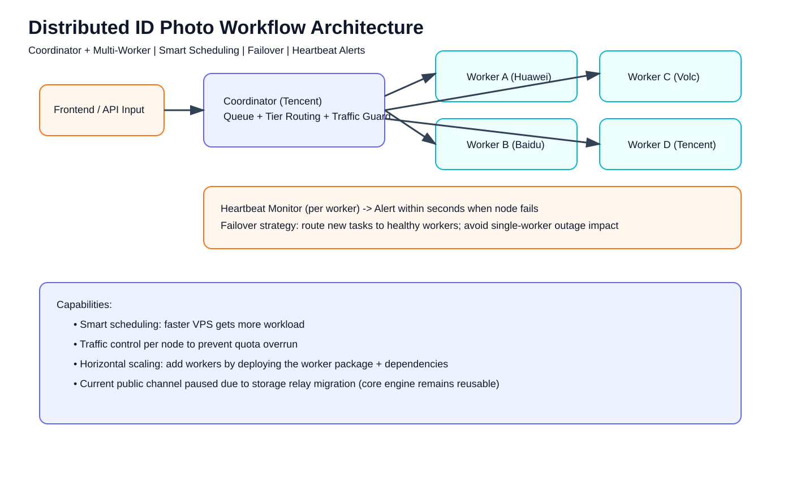

Distributed ID Photo Processing Engine
Production-tested backend workflow system with smart scheduling, traffic-aware control, failover, heartbeat monitoring, and rapid horizontal scaling.
Service status: Temporarily paused for storage migrationWhat this system solves
Built for small teams that need reliable image workflows: stable under load, resilient when one node fails, observable in real time, and easy to scale without re-architecture.
Core capabilities
Smart SchedulingFaster VPS nodes automatically take more workload to maximize throughput.
Traffic-Aware ControlPer-node traffic limits reduce overrun risk and keep operations predictable.
Fault ToleranceSingle worker failure does not stop service; scheduler routes to healthy nodes.
Heartbeat & AlertsNode heartbeat checks trigger alert notifications within seconds.
Rapid ScalingScale from 4 workers to N workers by deploying worker package + dependencies.
Reusable BackendCore engine is reusable for queue-based workflow and distributed processing projects.
Technical evidence
Non-sensitive, portfolio-safe evidence generated from real architecture and operation patterns.
Architecture Diagram

Monitoring Log Snapshot

System Capability Snapshot

Current operational note
Public mini-program channel is currently paused due to storage relay expiration. This is a channel/integration issue, not a core-engine capability failure.
Services based on this experience
Automation workflow systemsQueue-driven business workflow implementation.
Web dashboard + API integrationOperational visibility and control interfaces.
Distributed task orchestrationMulti-worker scheduling and reliability hardening.